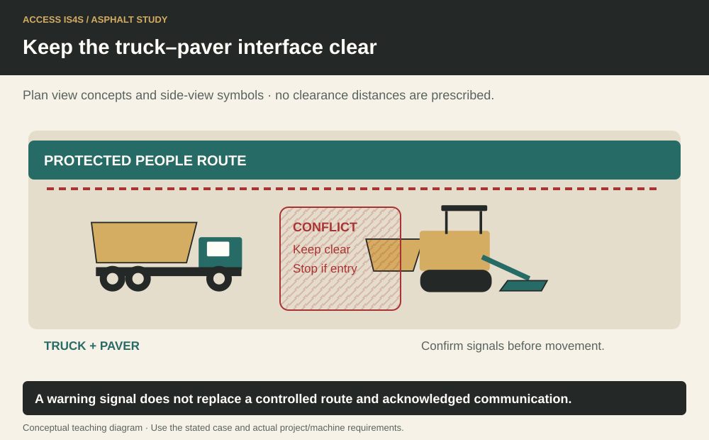
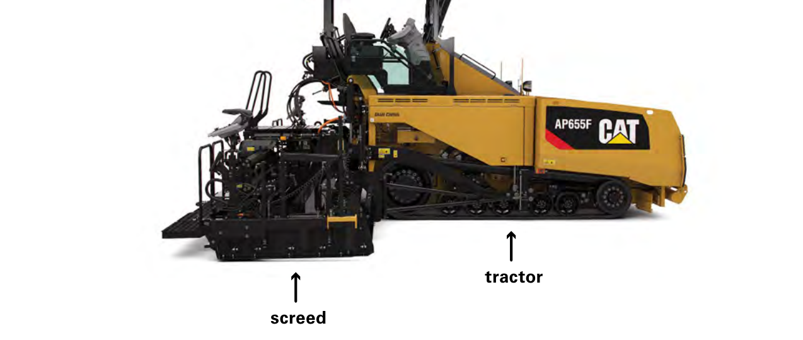

Study chapter · Outline B2
Working safely around haul trucks
A haul truck brings material into a place where people and machines already have work to do. The transfer becomes a coordinated operation: truck, paver, ground worker and traffic control each need a shared understanding. Blind area means a space the operator cannot see from the operating position. Pinch point means a place where a person can be caught between moving or closing surfaces. Neither disappears because a worker is wearing high-visibility clothing.
At Cedar Learning Access, a delivery may arrive while someone needs the community entrance. The crew must protect both the delivery path and the public route. The task is to keep people out of the interaction between truck and paver while the approved delivery arrangement is followed.
Learning step 1
Consequences of lapses in communication
Communication fails when a message is unheard, misunderstood or directed at the wrong person. Agree the signalling arrangement before the approach: the designated person, the signals or radio channel, the acknowledged stop instruction and the response to lost contact. Use the established site procedure, precise messages and confirmation. A driver looking toward a worker is not proof that the worker’s intention was understood. Eye contact supports communication, but it does not replace a confirmed message or a safe position.
The ground worker identifies themselves and remains in the planned visible position with an escape route, away from the truck’s swept path and reversing space. If visual or radio contact is lost, the movement must stop under the agreed procedure; the worker does not approach a moving vehicle to restore contact. Restart only after the people involved have re-established the arrangement. Record a recurring communication failure so the system can be improved.
Keep the truck–paver interface clear

Learning step 2
Equipment specific hazards
Study the whole movement envelope, not only the tyre tracks. A turning truck has a swept path; the body, rear overhang and attachments can move through different areas. A reversing truck creates a changing space between itself and the paver. That space stays clear of people and loose equipment. A raised body changes height and stability; overhead utilities, structures and ground condition must be addressed before the delivery operation.
Clean mirrors, windows, cameras and lights help the operator see, but visibility aids have limits and require inspection. Spilled material, a dirty access step or a contaminated walking surface adds slip and housekeeping risks. A person should never infer the safe location from an illustration’s scale. The actual truck configuration, manufacturer instructions, assessment and traffic arrangement determine the controlled area. A pre-delivery check connects these physical conditions to the agreed communication.
Two main sections of the paver

Try it and explain your thinking
Explain and apply the idea
Annotate the truck/paver interaction diagram with blind-area, pinch-point, swept-path and overhead-hazard questions. Describe the location a ground worker must avoid and what must be confirmed before choosing a signalling position.
Skills you use: Reading, Problem solving, Communication.
Calculate and check the result
Rewrite the three radio messages in the worked case so the intended driver and acknowledgement are unambiguous. Rehearse a lost-contact event with spoken classroom roles only.
Skills you use: Writing, Communication, Collaboration.
Create and save a one-page delivery brief for the fictional site
Create and save a one-page delivery brief for the fictional site. A partner adds a blocked entrance and dirty camera. Revise the brief, reopen the saved version and identify your change.
Skills you use: Digital, Adaptability, Creativity and innovation.
Show the skill in supervised practice
Machine/model/serial or classroom case: __________ · Manual/procedure and revision: __________ · Date/location: __________ · Learner/observer: __________
Record each criterion as 0—not yet demonstrated, 1—with task-solving support, or 2—independently under the stated conditions. Mark unobserved criteria separately; do not convert missing opportunity into a zero. The assessor determines the required repeat practice and applicable qualification requirements. A critical failure means hold, correction and reassessment regardless of the numerical result. Use safe simulations for classroom reasoning; actual operation requires the selected equipment, approved conditions and competent supervision.
| What the observer checks | Result | Evidence |
|---|---|---|
| Critical: Safe access, surroundings and communication maintained. | Pass / hold | Observation: __________________ |
| Critical: Required energy, heat, movement and public-access controls maintained for the actual task. | Pass / hold | Observation: __________________ |
| In a controlled, authorized exercise, the instructor checks the learner’s visible safe position and escape route against the actual plan. | 0 / 1 / 2 | Evidence/help: ________________ |
| Observe correct communication, loss-of-contact response and keeping the truck/paver gap clear; stop if the arrangement fails. | 0 / 1 / 2 | Evidence/help: ________________ |
| Record the machine, site conditions, supervision, observed actions and repeat attempt. Classroom role-play alone does not demonstrate vehicle-side competence. | 0 / 1 / 2 | Evidence/help: ________________ |
Actual conditions and support: __________________________
Feedback, next practice and authorized release/status: __________________________
Sources and further reading
- SkilledTradesBC. (2016). Asphalt Paving/Laydown Technician program outline, B2, printed p. 28; source PDF pp. 30–30.
- WorkSafeBC. (Web snapshot: October 30, 2026). OHS Regulation, Part 16: Mobile Equipment. Open publication.
- WorkSafeBC. (Web snapshot: October 30, 2026). OHS Regulation, Part 18: Traffic Control. Open publication.
- Caterpillar. (2016). Guide to Asphalt Paving (QEBQ1888). Asphalt paving process, tractor, screed, material delivery and handwork; model examples vary. Open publication.
Figure-specific pages, editions and original contributors are credited beside each image. Current project requirements and the matching machine instructions determine practical use.